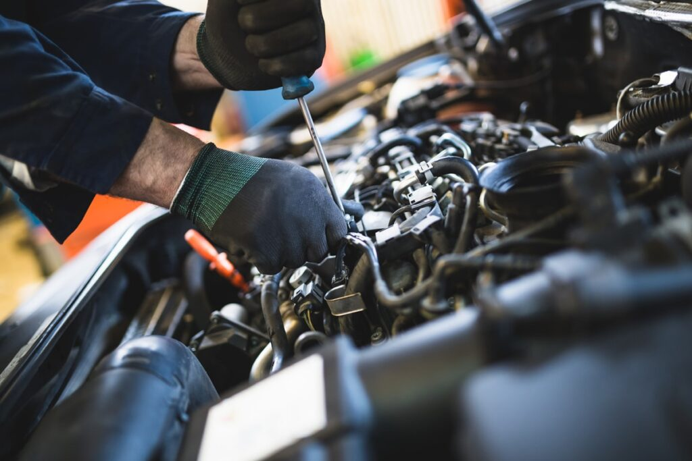

Mecatall es una compañía nacional con una profunda dedicación y pasión por el mundo del automóvil y su reparación. Nuestra amplia experiencia acumulada a lo largo de los años y nuestro firme compromiso con la excelencia en el servicio nos permiten ofrecer una solución integral para las necesidades de tu vehículo. Desde el diagnóstico preciso de las averías más complejas hasta la realización de un mantenimiento preventivo exhaustivo, en Mecatall nos esforzamos por superar tus expectativas. Trabajamos con transparencia y honestidad, brindándote la tranquilidad de saber que tu coche está en las mejores manos, con profesionales que se preocupan por tu seguridad y la de tu familia, sin importar en qué punto de España te encuentres.
